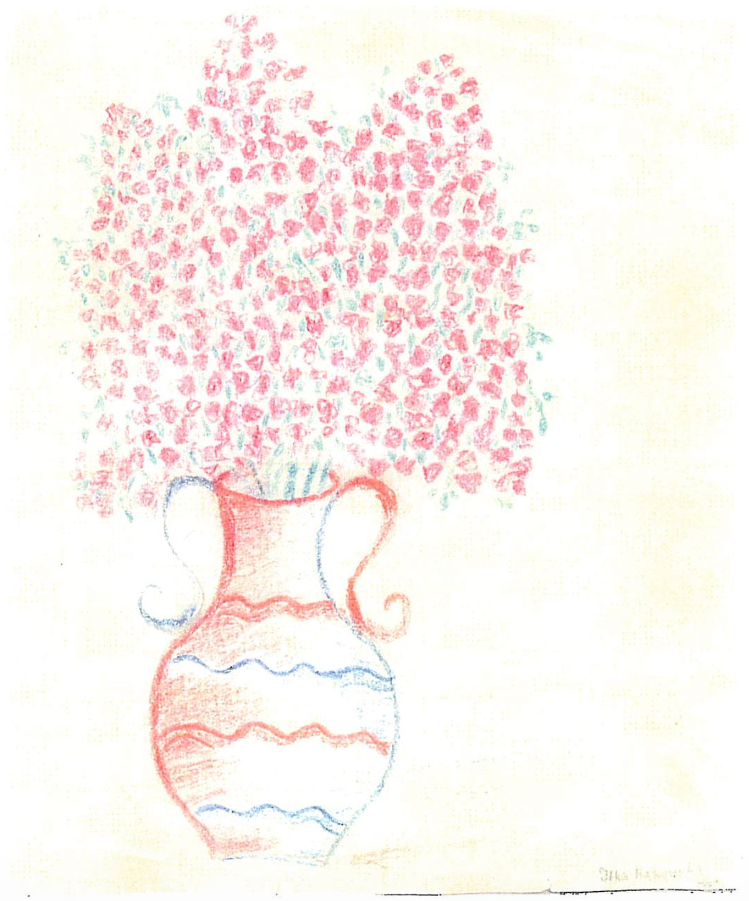

Why She Wrote
"She was not just Yitta Kafka," her daughter Rachel Bahar wrote. "What made her the person that she truly was, the essence of her being, memories, experiences and teachings, were her Parents Chaya and Eli Boruch Rakowsky." To understand Ida is to understand the world she came from -- a world of deep faith, unbreakable family bonds, and a Jewish life so rich that even the horror of its destruction could not erase it from her heart.
Ida herself explained why she put pen to paper: "For a very long time, I've been contemplating the idea of writing a few words about my life... A Yerusha (an inheritance or legacy) for our dear children and future generations to Remember!" She felt compelled by something larger than herself: "It is with an overwhelming gratitude and my heart overflowing with thanks to Hashem, that necessitates my action, to reveal the countless miracles which I have encountered."
Rachel observed that her mother possessed an extraordinary gift: "She could see the hand of G-d in every word, thing, creature and human that she encountered. For that reason, even having endured the most vile and horrific of mankind's evils, she never hated any part of humanity, only their actions and deeds." This was the lens through which Ida saw the world -- not with bitterness, but with a faith that refused to be extinguished.
למה היא כתבה
"היא לא היתה סתם יטא קפקא," כתבה בתה רחל בהר. "מה שעשה אותה לאדם שבאמת היתה, מהות ישותה, זיכרונותיה, חוויותיה ולקחיה, היו הוריה חיה ואלי ברוך רקובסקי." להבין את אידה פירושו להבין את העולם שממנו באה -- עולם של אמונה עמוקה, קשרים משפחתיים בלתי ניתנים לשבירה, וחיים יהודיים כה עשירים שאף זוועות חורבנם לא הצליחו למחוק אותם מליבה.
אידה עצמה הסבירה מדוע נטלה עט ביד: "זמן רב מאוד הרהרתי ברעיון לכתוב כמה מילים על חיי... ירושה לילדינו היקרים ולדורות הבאים לזכור!" היא חשה מונעת על ידי דבר גדול ממנה: "בהכרת תודה עצומה ובלב גדוש תודה לה׳, אני מחויבת לפעול, לגלות את הניסים הרבים שחוויתי."
רחל ציינה כי לאמה היתה מתנה יוצאת דופן: "היא ידעה לראות את יד ה׳ בכל מילה, דבר, יצור ואדם שפגשה. מסיבה זו, גם לאחר שסבלה מרשעות האנושות המחרידה ביותר, היא מעולם לא שנאה חלק כלשהו מהאנושות, רק את מעשיהם ופעולותיהם." כך ראתה אידה את העולם -- לא במרירות, אלא באמונה שסירבה להיכבות.
Historical Context
Before the war, Bedzin (Bendein) was home to approximately 28,000 Jews -- nearly 45% of the city's total population. The community sustained dozens of synagogues, prayer houses, charitable organizations, and a vibrant network of Jewish schools. Religious life permeated every aspect of daily existence, from the rhythms of Shabbat to the communal celebrations of holidays.
By the war's end, the Jewish community of Bedzin had been almost entirely annihilated. Of its roughly 28,000 Jewish residents, only a few hundred survived. The world Ida recorded in her memoir existed, by the time she wrote it, only in the memories of those who had lived it.
הקשר היסטורי
לפני המלחמה, בנדין (Bedzin) היתה ביתם של כ-28,000 יהודים -- כמעט 45% מאוכלוסיית העיר. הקהילה החזיקה עשרות בתי כנסת, בתי תפילה, ארגוני צדקה ורשת תוססת של בתי ספר יהודיים. החיים הדתיים חדרו לכל היבט של הקיום היומיומי, ממקצבי השבת ועד לחגיגות החגים הקהילתיות.
עד תום המלחמה, הקהילה היהודית של בנדין הושמדה כמעט כליל. מתוך כ-28,000 תושביה היהודים, שרדו רק מאות ספורים. העולם שאידה תיעדה בזיכרונותיה היה קיים, בעת שכתבה, רק בזיכרונם של אלה שחיו בו.
Family Photos
תמונות משפחתיות
Childhood in Bendein
Yitta Rakowsky was born overlooking the ancient castle and the Przemsha River, the eldest of three girls -- Yitta, Dina, and Rivka (Rivkale). The family lived in "one large room, which served as bedroom, kitchen and living room." Her father Eli Boruch owned a small factory producing wooden products for bakeries, in partnership with his brother. Despite modest means, the home overflowed with "Yeddishkite" and warmth. So devoted was her mother Chaya that "the walls of the house had not even seen her Mother's uncovered head" -- she always wore her wig, even in the privacy of home.
Friday nights were sacred. Before Shabbat, Ida and her dear friend Salla Piekurska would walk designated streets collecting challah for the needy in a white pillowcase. As she entered those homes, she felt the air take on a "heavenly peace," leaving the hardships of the week behind. On Friday evenings, her father took her along to shul, where they lingered after services to hear the choir. Once, they waited in the crowd to hear the renowned Chazan Yosele Rozenblat, whose voice filled the synagogue like a prayer made audible.
Her education was divided between worlds: Bais Yaakov for Jewish schooling, where she absorbed Torah and the values her parents cherished, and the public Gymnasium, where she learned alongside Polish children. "Easter and Christmas was a precarious time in the streets, and the Jews knew to keep a low profile," she recalled. But there were also moments of pure childhood joy -- a beloved school trip to a cave near Krakow left her feeling "privileged and grown-up."
Near her aunt's house stood a fire hall on the riverbank. Through its open windows, Ida could hear the firemen's band rehearsing, and she taught herself Sousa's marches by ear -- music that would echo in her mind for decades. Her mother's quiet teachings shaped her character above all: "We cannot speak about other people, it is loshon Hara. We must guard our speech." These words, simple and absolute, became the moral foundation she carried through everything that followed.
ילדות בבנדין
יטא רקובסקי נולדה עם נוף לטירה העתיקה ולנהר פשמשה, הבכורה מבין שלוש בנות -- יטא, דינה וריבקה (ריבקל׳ה). המשפחה התגוררה ב"חדר גדול אחד, ששימש כחדר שינה, מטבח וסלון." אביה אלי ברוך היה בעלים של מפעל קטן לייצור מוצרי עץ למאפיות, בשותפות עם אחיו. למרות האמצעים הדלים, הבית היה מלא "אידישקייט" וחמימות. אמה חיה היתה כה צנועה ש"קירות הבית לא ראו מעולם את ראשה המגולה של אמה" -- היא חבשה פאה תמיד, אף בפרטיות הבית.
ליל שבת היה קדוש. לפני שבת, אידה וחברתה היקרה סאלא פיקורסקה היו מהלכות ברחובות ייעודיים ואוספות חלות לנזקקים בציפית לבנה. כשנכנסה לאותם בתים, הרגישה שהאוויר מתמלא "שלווה שמימית," ומותיר מאחור את קשיי השבוע. בערבי שבת, אביה לקח אותה עמו לבית הכנסת, שם התעכבו אחרי התפילה לשמוע את המקהלה. פעם אחת, חיכו בקהל לשמוע את החזן המפורסם יוסל׳ה רוזנבלט, שקולו מילא את בית הכנסת כתפילה שהפכה לנשמעת.
חינוכה התחלק בין שני עולמות: Bais Yaakov ללימודים יהודיים, שם ספגה תורה ואת הערכים שהוריה טיפחו, והגימנסיה הציבורית, שם למדה לצד ילדים פולנים. "פסחא וחג המולד היו תקופות מסוכנות ברחובות, והיהודים ידעו לשמור על פרופיל נמוך," נזכרה. אך היו גם רגעים של שמחת ילדות טהורה -- טיול בית ספרי אהוב למערה ליד קרקוב השאיר אותה מרגישה "מיוחסת ובוגרת."
ליד בית דודתה עמדה תחנת כיבוי אש על גדת הנהר. דרך חלונותיה הפתוחים, אידה יכלה לשמוע את תזמורת הכבאים מתרגלת, והיא לימדה את עצמה את מצעדי סוזה על פי שמיעה -- מוזיקה שהדהדה בנפשה עשרות שנים. לימודי אמה השקטים עיצבו את אופייה מכל: "אסור לנו לדבר על אנשים אחרים, זה לשון הרע. עלינו לשמור על דיבורנו." מילים אלה, פשוטות ומוחלטות, הפכו ליסוד המוסרי שנשאה עמה דרך כל מה שבא אחר כך.

Original artwork by: Itka Rakowska
Historical Context
Pre-war Bedzin (Bendein) was home to roughly 28,000 Jews -- nearly half the city's population -- making it one of the most significant Jewish centers in the Zaglebie region of Upper Silesia. The community sustained dozens of synagogues, a rich network of charitable organizations, and a vibrant cultural life that spanned Yiddish theater, Hebrew study, and political movements from Bundism to Zionism.
The Bais Yaakov movement, founded by Sarah Schenirer in nearby Krakow in 1917, had transformed girls' Jewish education across Poland by the time Ida attended. For the first time, young Jewish women received formal religious instruction, a revolution in Orthodox life that gave girls like Ida a deep grounding in Torah and tradition alongside their secular education.
הקשר היסטורי
בנדין (Bedzin) לפני המלחמה היתה ביתם של כ-28,000 יהודים -- כמעט מחצית אוכלוסיית העיר -- מה שהפך אותה לאחד המרכזים היהודיים המשמעותיים ביותר באזור זגלמביה שבשלזיה העילית. הקהילה החזיקה עשרות בתי כנסת, רשת עשירה של ארגוני צדקה, וחיי תרבות תוססים שכללו תיאטרון יידיש, לימודי עברית, ותנועות פוליטיות מהבונד ועד הציונות.
תנועת Bais Yaakov, שנוסדה על ידי שרה שנירר בקרקוב הסמוכה ב-1917, חוללה מהפכה בחינוך היהודי לבנות ברחבי פולין עד שאידה למדה שם. לראשונה, נשים יהודיות צעירות קיבלו חינוך דתי פורמלי, מהפכה בחיים האורתודוקסיים שהעניקה לבנות כמו אידה יסודות עמוקים בתורה ובמסורת לצד חינוכן החילוני.
Family Photos
תמונות משפחתיות
Historical Context
Interwar Poland was marked by severe economic hardship for its Jewish population. Government-imposed restrictions, anti-Jewish economic boycotts, and widespread discrimination made earning a living increasingly precarious. Jewish families in industrial towns like Bedzin and Sosnowiec faced particular pressure as Polish nationalists targeted Jewish-owned businesses.
In this climate, securing a physical trade was seen as a vital lifeline. Vocational training offered young Jewish women a semblance of security against an unknown future -- a portable skill that could not be confiscated. Chaya Rakowsky's insistence that her daughter learn dressmaking would prove tragically prescient.
הקשר היסטורי
פולין שבין שתי מלחמות העולם התאפיינה בקשיים כלכליים חמורים לאוכלוסייה היהודית. הגבלות ממשלתיות, חרמות כלכליים אנטי-יהודיים ואפליה נרחבת הפכו את פרנסת הלחם למשימה שברירית יותר ויותר. משפחות יהודיות בערי תעשייה כמו בנדין וסוסנוביץ׳ סבלו מלחץ מיוחד כאשר הלאומנים הפולנים כיוונו לעסקים בבעלות יהודית.
באווירה זו, רכישת מלאכת יד נתפסה כקרש הצלה חיוני. הכשרה מקצועית הציעה לנשים יהודיות צעירות מעין ביטחון מול עתיד לא ידוע -- מיומנות ניידת שאי אפשר להחרים. עמידתה של חיה רקובסקי על כך שבתה תלמד תפירה תוכח כנבואית באופן טרגי.
A Formative Loss
Tragedy struck early. On Rosh Chodesh Iyar, a Friday, in 1931, her beloved father Eli Boruch died. She was seven years old. At the funeral in Cheladz, they opened the casket and asked her to ask mechila (forgiveness) of her father. "I refused," she wrote. "I was so upset at my Father. Why did he leave us, when I loved him so much." Even during his final illness, she had sat at his bedside each evening and repeated her daily Bais Yaakov lesson to him. "This seemed to give him great pleasure."
After his death, the ache never left. She once asked her mother: "Mom, why is it that all the children come with fathers and mothers, and I can't?" Her mother answered simply: "My dear child, G-d is right, and his judgement is right." Ida wrote: "The answer always rings in my mind forever!" To survive, her mother Chaya began laboring over custom-made shirts, but developed a weak heart. One night Ida ran alone through dark streets to fetch a doctor, racing past a huge guard dog that terrified her. Another time she ran in the darkness to bring Aunt Shaindele, her mother's devoted sister.
Aunt Shaindele became their lifeline, providing supper for the girls daily. Her husband Uncle Chemia and cousins Chaim Leib and Avrom Dovid embraced the fatherless family. After Seder each year, the sleeping sisters were carried home on their cousins' shoulders through the quiet streets.
Knowing the precariousness of their situation, Chaya sent young Ida to travel 8km daily to Sosnowiec to learn dressmaking. "You should never need it, but you should have a profession in your hands," her mother warned. Ida later reflected: "It was probably a good preparation for my later years in concentration camps..." She graduated with honors, earning strong job prospects, but the rumors of war were already crossing the border.
אובדן מעצב
הטרגדיה פקדה מוקדם. בראש חודש אייר, יום שישי, בשנת 1931, נפטר אביה האהוב אלי ברוך. היא היתה בת שבע. בהלוויה בצ׳לאדז׳, פתחו את הארון וביקשו ממנה לבקש מחילה מאביה. "סירבתי," כתבה. "כעסתי כל כך על אבי. למה עזב אותנו, כשאהבתי אותו כל כך." אפילו בזמן מחלתו האחרונה, ישבה ליד מיטתו כל ערב וחזרה בפניו על שיעור Bais Yaakov היומי שלה. "נראה שזה הסב לו הנאה רבה."
אחרי מותו, הכאב לא עזב מעולם. פעם שאלה את אמה: "אמא, למה כל הילדים באים עם אבות ואמהות, ואני לא יכולה?" אמה ענתה בפשטות: "ילדתי היקרה, ה׳ צודק, ומשפטו צודק." אידה כתבה: "התשובה מהדהדת בנפשי לעד!" כדי לשרוד, החלה אמה חיה לעבוד בייצור חולצות בהזמנה אישית, אך פיתחה חולשת לב. לילה אחד רצה אידה לבדה ברחובות חשוכים להביא רופא, חולפת בריצה על פני כלב שמירה ענק שהפחיד אותה. פעם אחרת רצה בחושך להביא את דודה שיינדל, אחותה המסורה של אמה.
דודה שיינדל הפכה לקרש ההצלה שלהן, ומספקת ארוחת ערב לבנות מדי יום. בעלה דוד חמיה ובני דודיהן חיים לייב ואברום דוד חיבקו את המשפחה חסרת האב. אחרי הסדר בכל שנה, האחיות הישנות הובלו הביתה על כתפי בני דודיהן ברחובות השקטים.
מתוך ידיעת שבריריות מצבן, שלחה חיה את אידה הצעירה לנסוע 8 ק"מ מדי יום לסוסנוביץ׳ כדי ללמוד תפירה. "שלעולם לא תצטרכי לזה, אבל שיהיה לך מקצוע בידיים," הזהירה אמה. אידה הרהרה בדיעבד: "זו היתה כנראה הכנה טובה לשנותיי המאוחרות יותר במחנות הריכוז..." היא סיימה בהצטיינות ועם סיכויי תעסוקה טובים, אך שמועות המלחמה כבר חצו את הגבול.
Family Photos
תמונות משפחתיות
The Flames of Bendein
"As soon as they arrived, it seemed they had a plan, because right away the first thing they did is march to our shul." The vibrant city became a ghost town overnight as German soldiers filled the streets. Ida's memory of the Great Shul was precise and reverent: "The Mizrach wall was the most beautiful, with the colored window in the center for the Ahron Kodesh which was exquisite. In the center was a bimah, headed with a crown like beams... all in gold. There were steps on all four sides... 12 columns all gold leading up to the ladies balcony."
All of it was set ablaze. "People were trying to enter the flames in order to rescue the Sefer Torahs, in vain. They were shot. The spot became a huge heap of rubble." Watching from an attic window, Ida and her family saw the great plumes of smoke rising and knew their entire world was ending.
What followed was daily terror. The Germans conducted "Oblaves" -- raids that would "invade a whole apartment building... grabbing all men... we never heard from them again." Obtaining food became a battle for survival; "Poles used to point 'this is a Jude', and out of the line he got." The family was eventually forced from their home at Potockiego 4, crowded into ever-smaller quarters as the noose of occupation tightened around the Jewish community.
להבות בנדין
"ברגע שהגיעו, נראה שהיתה להם תוכנית, כי מיד הדבר הראשון שעשו היה לצעוד לבית הכנסת שלנו." העיר התוססת הפכה לעיר רפאים בן לילה כאשר חיילים גרמנים מילאו את הרחובות. זיכרונה של אידה מבית הכנסת הגדול היה מדויק ומלא יראת כבוד: "קיר המזרח היה היפה ביותר, עם החלון הצבעוני במרכז לארון הקודש שהיה נהדר. במרכז עמדה בימה, עטורה בקרניים דמויות כתר... הכל בזהב. היו מדרגות מארבעת הצדדים... 12 עמודים כולם זהב המובילים לעזרת הנשים."
הכל הועלה באש. "אנשים ניסו להיכנס ללהבות כדי להציל את ספרי התורה, ללא הועיל. הם נורו. המקום הפך לערימת הריסות ענקית." מחלון עליית הגג, אידה ומשפחתה צפו בעמודי העשן הגדולים העולים, וידעו שכל עולמם הולך ונגמר.
מה שבא אחר כך היה אימה יומיומית. הגרמנים ערכו "אובלאווס" -- פשיטות ש"פלשו לבניין דירות שלם... חוטפים את כל הגברים... מעולם לא שמענו מהם שוב." השגת מזון הפכה למאבק הישרדות; "פולנים נהגו להצביע 'זה יהודי', ומהתור הוא הוצא." המשפחה סולקה בסופו של דבר מביתה ברחוב פוטוצקיגו 4, ודוחקה לדירות הולכות וקטנות ככל שלולאת הכיבוש הידקה סביב הקהילה היהודית.
World Timeline
September 1, 1939: Germany invades Poland. By September 8, Wehrmacht forces had entered Bedzin. On September 9, 1939 -- on the very first day of the occupation of the city -- the SS set fire to the Great Synagogue of Bedzin and the surrounding Jewish quarter. Between 40 and 200 Jews were burned alive or shot as they tried to escape the flames. It was one of the earliest mass atrocities of the war.
The Bedzin Judenrat (Jewish council) was soon established under German orders, forced to implement increasingly brutal decrees against its own community. Forced labor, confiscation of property, and restriction of movement became the daily reality for Bedzin's Jews, a suffocating prelude to the deportations that would follow.
ציר הזמן העולמי
1 בספטמבר 1939: גרמניה פולשת לפולין. עד 8 בספטמבר, כוחות הוורמאכט נכנסו לבנדין. ב-9 בספטמבר 1939 -- ביום הראשון ממש של כיבוש העיר -- הצית הסס את בית הכנסת הגדול של בנדין ואת הרובע היהודי הסמוך. בין 40 ל-200 יהודים נשרפו חיים או נורו כשניסו להימלט מהלהבות. זו היתה אחת הזוועות ההמוניות המוקדמות ביותר במלחמה.
היודנרט (המועצה היהודית) של בנדין הוקמה במהרה בפקודה גרמנית, ונאלצה ליישם גזירות אכזריות הולכות ומחמירות נגד קהילתה שלה. עבודת כפייה, החרמת רכוש והגבלת תנועה הפכו למציאות היומיומית של יהודי בנדין, פרוזדור מחניק לגירושים שיבואו.
Family Photos
תמונות משפחתיות
The Schmelt Camps
Organization Schmelt, named after SS-Brigadefuhrer Albrecht Schmelt, operated a vast network of over 160 forced labor camps across Upper Silesia. Young Jews from the Zaglebie region -- Bedzin, Sosnowiec, and surrounding towns -- were systematically funneled into these camps, deeply integrated into the German war economy. Prisoners produced textiles, munitions, and other materials critical to the German military effort.
Unlike the more widely known concentration camps, Schmelt camps operated with a veneer of "labor mobilization," making them less visible to history. For the young women trapped within them, the reality was forced labor, starvation rations, and total separation from their families.
מחנות שמלט
ארגון שמלט, על שם סס-בריגדפיהרר אלברכט שמלט, הפעיל רשת עצומה של למעלה מ-160 מחנות עבודת כפייה ברחבי שלזיה העילית. יהודים צעירים מאזור זגלמביה -- בנדין, סוסנוביץ׳ והערים הסמוכות -- הוזרמו באופן שיטתי למחנות אלה, שהיו משולבים עמוקות בכלכלת המלחמה הגרמנית. האסירים ייצרו טקסטיל, תחמושת וחומרים אחרים חיוניים למאמץ המלחמתי הגרמני.
שלא כמחנות הריכוז המוכרים יותר, מחנות שמלט פעלו במסווה של "גיוס לעבודה," מה שהפך אותם לפחות גלויים להיסטוריה. עבור הנשים הצעירות שנכלאו בהם, המציאות היתה עבודת כפייה, מנות רעב והפרדה מוחלטת ממשפחותיהן.
Separation & Sagan
Shortly after her 17th birthday, the summons came. Ida had registered at the factory ROSMAN, trying desperately to stay home to care for her ailing mother. But when the order arrived to report, Ida and her mother went together to beg for clemency. "He pushed my dear Mother away. How dare he push my dear Mother. I was enraged." There was no mercy.
She was taken to the Sherocinek, a Jewish orphanage that had been converted into a holding center, a new building slightly out of town. Her brave younger sister Rivkale climbed through neighboring fences to reach a window above where Ida was held, desperate for one last glimpse. On the day of the march -- rows of four, heavily guarded -- Rivkale managed to walk right beside her past the armed guards to deliver their mother's last message: "Take care, and G-d willing, we will see each other soon." At the station, a German guard spat: "Those dirty bunch."
At the Sagan Tuch Fabrik, they were ordered to surrender all belongings. Ida gave up her only treasure -- "a beautiful gold ring with a beautiful purple stone, which I received for my birthday from my dear friend." But there was one thing she would not relinquish: "There was one thing I was not ready to surrender" -- her family photographs, which she hid and guarded through everything that followed.
Staring at a bowl of watery soup she could not bring herself to eat, she met Masha Haida across the table. "We exchanged glances... same town, same upbringing, and from that moment we became best friends." Their first Pessach in Sagan was marked by deprivation: "I remember exchanging my bread for a 'pel' potato. There was nothing else to exchange."
From attic windows, the girls watched Hitler Youth parading in the streets below. "I, we felt like birds locked in a cage. Yet we still had the hope, one day soon, we will be free." For a time, brief letters arrived from home -- fragments of connection to the world they had been torn from. Then all communication was cut off, and silence took its place.
פרידה וזאגאן
זמן קצר אחרי יום הולדתה ה-17, הגיע צו הגיוס. אידה נרשמה במפעל רוסמאן, ניסתה נואשות להישאר בבית לטפל באמה החולה. אך כשהגיעה הפקודה להתייצב, אידה ואמה הלכו יחד להתחנן לרחמים. "הוא דחף את אמי היקרה. איך העז לדחוף את אמי היקרה. הייתי זועמת." לא היה רחמים.
היא נלקחה לשרוצ׳ינק, בית יתומים יהודי שהוסב למרכז מעצר, בניין חדש מעט מחוץ לעיר. אחותה הצעירה האמיצה ריבקל׳ה טיפסה דרך גדרות שכנות כדי להגיע לחלון מעל המקום שבו הוחזקה אידה, נואשת להצצה אחרונה. ביום הצעידה -- שורות של ארבע, תחת שמירה כבדה -- ריבקל׳ה הצליחה ללכת ממש לצדה חולפת על פני השומרים החמושים כדי למסור את מסר אמם האחרון: "שמרי על עצמך, ואם ירצה ה׳, ניפגש בקרוב." בתחנת הרכבת, ירק שומר גרמני: "החבורה המלוכלכת הזו."
במפעל האריגים בזאגאן, הן צוו למסור את כל חפציהן. אידה מסרה את אוצרה היחיד -- "טבעת זהב יפהפייה עם אבן סגולה מהממת, שקיבלתי ליום הולדתי מחברתי היקרה." אך דבר אחד היא סירבה למסור: "היה דבר אחד שלא הייתי מוכנה לוותר עליו" -- תמונות משפחתה, שהחביאה ושמרה דרך כל מה שבא.
בוהה בקערת מרק מימי שלא יכלה להכריח את עצמה לאכול, פגשה את מאשה חיידא מעבר לשולחן. "החלפנו מבטים... אותה עיר, אותו גידול, ומאותו רגע הפכנו לחברות הכי טובות." הפסח הראשון שלהן בזאגאן התאפיין בחסך: "אני זוכרת שהחלפתי את הלחם שלי בתפוח אדמה אחד. לא היה שום דבר אחר להחלפה."
מחלונות עליית הגג, הבנות צפו בנוער ההיטלראי צועד ברחובות למטה. "אני, אנחנו הרגשנו כמו ציפורים כלואות בכלוב. ובכל זאת עדיין היתה לנו התקווה, שבקרוב, נהיה חופשיות." לזמן מה, הגיעו מכתבים קצרים מהבית -- רסיסי קשר לעולם שנקרעו ממנו. ואז כל התקשורת נותקה, והשתיקה תפסה את מקומה.
Family Photos
תמונות משפחתיות
Defiance in Greenberg
Ida was transferred to Greenberg Shlesien, where they were met by "a Lagerfurer, a man with a harsh looking face, and two women middle aged, who appeared to have a military discipline." The factory was divided into the "Vaberai" (weaving) and "Shpinerai" (spinning). Ida was assigned to the Shpinerai, working enormous machines. Her German instructor walked in on the first day, looked at the girls, and asked in shock, "Where are your horns?" -- having been taught that Jews were literal demons.
Despite the terror, acts of spiritual defiance burned bright. Around Chanukah, Ida and two friends from Bais Yaakov -- Malka Pfefer and Estusia Krell, who had been in Bnos when Ida was still in Basia -- dared to ask a guard to light a candle. Miraculously permitted, Ida sang both "Hanarot" and "Maoz Tzur" before the small flame. "I was in every performance singing solo," she recalled with quiet pride. Men from the neighboring camp even came to witness the lighting. In the middle of total darkness, they injected a ray of hope.
One day, a transport of Hungarian girls arrived. "These girls were so well dressed, looked so good, soon to become like us." The contrast was devastating -- a reminder of how far they themselves had fallen from normal life.
Then came a dream that haunted her: "I was standing on an apel... thousands of people around me... all of a sudden, all of the people fell into the ground and I alone was standing there. I woke up terribly frightened." She could not know then how prophetic this vision would prove.
מרי בגרינברג
אידה הועברה לגרינברג שלזיה, שם קיבלו את פניהן "לאגרפירר, איש עם פנים קשות, ושתי נשים בגיל העמידה, שנראו כבעלות משמעת צבאית." המפעל חולק ל"וואבעראי" (אריגה) ו"שפינעראי" (טוויה). אידה שובצה לשפינעראי, עובדת על מכונות ענקיות. המדריך הגרמני שלה נכנס ביום הראשון, הביט בבנות, ושאל בהלם, "איפה הקרניים שלכן?" -- לאחר שלימדו אותו שיהודים הם שדים ממש.
למרות האימה, מעשי מרי רוחני בערו בעוז. סביב חנוכה, אידה ושתי חברות מ-Bais Yaakov -- מלכה פפר ואסתוסיה קרל, שהיו בבנות כשאידה היתה עדיין בבסיה -- העזו לבקש משומר להדליק נר. באורח נס אושר להן, ואידה שרה גם "הנרות הללו" וגם "מעוז צור" מול הלהבה הקטנה. "הייתי בכל הופעה שרה סולו," נזכרה בגאווה שקטה. גברים מהמחנה הסמוך אף באו לצפות בהדלקה. בלב חשכה מוחלטת, הזריקו קרן של תקווה.
יום אחד, הגיע משלוח של בנות הונגריות. "הבנות האלה היו כל כך מלובשות היטב, נראו כל כך טוב, בקרוב יהפכו להיות כמונו." הניגוד היה מרסק -- תזכורת כמה רחוק הן עצמן נפלו מחיים נורמליים.
ואז בא חלום שרדף אותה: "עמדתי על אפל... אלפי אנשים סביבי... ופתאום, כל האנשים נפלו לתוך האדמה ואני לבד עמדתי שם. התעוררתי מבוהלת מאוד." היא לא יכלה לדעת אז עד כמה נבואי יתברר החזון הזה.
Spiritual Resistance
Maintaining religious observance in the camps was strictly forbidden and punishable by death. Acts like singing prayers, lighting makeshift candles, or marking the Jewish calendar were profound forms of spiritual resistance -- a refusal to let the oppressors destroy not just bodies but souls.
Music played a unique role in this resistance. Singing familiar melodies -- Shabbat zemirot, holiday songs, lullabies from home -- served as both defiance and survival. For Ida, whose voice had been her gift since childhood, song became a way of keeping faith alive in a world designed to extinguish it.
התנגדות רוחנית
שמירת מצוות במחנות היתה אסורה בהחלט ועונשה מוות. מעשים כמו שירת תפילות, הדלקת נרות מאולתרים, או ציון לוח השנה היהודי היו צורות עמוקות של התנגדות רוחנית -- סירוב לאפשר למדכאים להשמיד לא רק גופות אלא גם נשמות.
למוזיקה היה תפקיד ייחודי בהתנגדות זו. שירת מנגינות מוכרות -- זמירות שבת, שירי חג, שירי ערש מהבית -- שימשו הן כמרי והן ככלי הישרדות. עבור אידה, שקולה היה מתנתה מילדות, השירה הפכה לדרך לשמור על האמונה בעולם שנועד לכבות אותה.
Family Photos
תמונות משפחתיות
Dehumanization
"Selections" were designed not only to weed out the weak for extermination but to strip prisoners of all dignity and humanity. Those showing signs of illness -- particularly Tuberculosis, rampant in the cramped and filthy conditions -- disappeared forever. Young women deemed physically attractive were separated for exploitation by German officers.
The denial of medical care was itself a form of slow murder. Prisoners with failing eyesight, injuries, or chronic illness received no treatment, making them unable to meet their labor quotas and thus vulnerable to the next selection. Survival often hinged on small acts of intervention -- a sympathetic guard, a reassignment, a moment of mercy in a merciless system.
דה-הומניזציה
"הסלקציות" נועדו לא רק לסנן את החלשים להשמדה אלא לשלול מהאסירים כל כבוד ואנושיות. אלה שהראו סימני מחלה -- במיוחד שחפת, שהשתוללה בתנאים הצפופים והמלוכלכים -- נעלמו לנצח. נשים צעירות שנחשבו אטרקטיביות פיזית הופרדו לניצול על ידי קצינים גרמנים.
שלילת הטיפול הרפואי היתה כשלעצמה צורה של רצח איטי. אסירים עם ראייה מתדרדרת, פציעות או מחלות כרוניות לא קיבלו טיפול, מה שהפך אותם ללא מסוגלים לעמוד במכסות העבודה ובכך חשופים לסלקציה הבאה. הישרדות תלויה היתה לעתים קרובות במעשים קטנים של התערבות -- שומר אוהד, שיבוץ מחדש, רגע של רחמים במערכת חסרת רחמים.
The Darkest Days
The Germans began "experiments" and brutal inspections. Ida vividly remembered the terror of the naked selection: "3 huge Germans sitting apart... We were to walk in completely naked, hands down... I tried to cover myself with my hands, it was 'ferboten'... The girls that still had a good physique... they did not come back. They were sent away to the German officers." Decades later, the image remained seared in her memory: "I can still see those 3 sitting there in front of me. It was terrifying."
Girls began deteriorating. Estusia Chzhanoska -- "our landlord's daughter from home, a beautiful young girl" -- contracted Tuberculosis and was sent away, never to return. When Ida's own eyesight began failing at the massive spinning machines, she went to the eye doctor, who refused to prescribe glasses despite her obvious need.
Then came what Ida called an open miracle. "The YugerFreurin... suggested that I should be given the job in the kitchen, since I did not get glasses and could not see. There was a rumor that I probably bribed them. I regard this as an open miracle." The kitchen assignment likely saved her life, giving her access to slightly more food at the moment she needed it most.
Through it all, Ida and her friends clung to hope with a ferocity that defied reason. They dreamed of the simplest pleasures: "We envisioned the first meal at home would be enough plain potatoes with water." And they held fast to belief: "When we return home, my family will be waiting for me!" It was a faith that sustained them through the darkness, even as the truth grew harder to deny.
הימים האפלים ביותר
הגרמנים החלו ב"ניסויים" ובבדיקות אכזריות. אידה זכרה בבהירות את אימת הסלקציה העירומה: "3 גרמנים ענקיים יושבים בריחוק... היינו צריכות ללכת עירומות לחלוטין, ידיים למטה... ניסיתי לכסות את עצמי בידיים, זה היה 'ferboten'... הבנות שעוד היתה להן מבנה גוף טוב... הן לא חזרו. הן נשלחו לקצינים הגרמנים." עשרות שנים מאוחר יותר, הדמות נותרה צרובה בזיכרונה: "אני עדיין יכולה לראות את שלושתם יושבים שם מולי. זה היה מפחיד."
בנות החלו להידרדר. אסתוסיה צ׳ז׳אנוסקה -- "בת בעל הבית שלנו מהבית, נערה צעירה ויפה" -- חלתה בשחפת ונשלחה, ולא שבה לעולם. כשראייתה של אידה עצמה החלה להתדרדר ליד מכונות הטוויה הענקיות, הלכה לרופא עיניים, שסירב לרשום לה משקפיים למרות הצורך הברור שלה.
ואז בא מה שאידה כינתה נס גלוי. "היוגרפרוירין... הציעה שיינתן לי תפקיד במטבח, מכיוון שלא קיבלתי משקפיים ולא יכולתי לראות. היתה שמועה שכנראה שיחדתי אותם. אני רואה בכך נס גלוי." השיבוץ למטבח כנראה הציל את חייה, ונתן לה גישה לקצת יותר אוכל ברגע שהיתה צריכה לכך ביותר.
דרך כל זאת, אידה וחברותיה נאחזו בתקווה בעוצמה שהכחישה כל היגיון. הן חלמו על ההנאות הפשוטות ביותר: "דמיינו שהארוחה הראשונה בבית תהיה מספיק תפוחי אדמה פשוטים עם מים." והן נאחזו באמונה: "כשנחזור הביתה, משפחתי תחכה לי!" זו היתה אמונה שהחזיקה אותן דרך החשכה, גם כשהאמת הפכה קשה יותר להכחשה.
Family Photos
תמונות משפחתיות
The Death March
In early January 1945, in the "cold merciless winter," they were ordered to march. Walking 25-30km daily, the column stretched endlessly through frozen landscapes. "Some girls found something like a potato or a piece of radish on the road. They were shot on the spot." By the third day, Ida developed a terrible pain in her foot and could not keep up. "The soldier with the rifle came over and pointed the rifle at me, ready to shoot. A girl that I knew very little, jumped out of the line, picked me up on both sides of my arms, and said 'Sie Ken Laufen, sie can loufen' (She can walk, she can walk)." The soldier moved on. "I was granted an open miracle."
Her shoes fell apart from the relentless march, and she bound her feet in sackcloth and string. Mornings brought the worst sight of all: "Can anyone imagine the sight of waking up in the field in winter, and your comrades beside you just did not wake up?" -- bodies half-covered in snow, frozen where they lay. One moment haunted her forever: "The time when a girl right behind me was pulled out, she looked into my eyes so pleadingly."
After weeks on the road, they arrived at Helnbrecht, a sub-camp of Flossenburg, where they were held for three weeks. The conditions were savage. Forced to wash naked in the snow: "Snow over a foot high, very very cold, naked, wash in cold water... I hardly made it back to the door when I passed out." During this time, she and her dear friend made a sacred pact: "I had my little siddur with me always... we both made an oath, that whoever of us will survive, will make a memorial stone for a remembrance."
The march resumed, this time through the inferno of a collapsing Reich. Through Dresden: "The streets were full of dust like a desert... the city is on fire, everything was burning... quickly go across because the bridge is mined to blow up soon." Through Chemnitz: "A huge industrial city... no living soul to be seen... air alarm, planes flying over us." On the road, they encountered men marching in the opposite direction -- "striped outfits like pajamas" -- the ghostly columns of other camps being evacuated.
One morning, suffering from severe dysentery in a warehouse in the rain, a wise friend saved her life with brutal simplicity: "You release your urine and drink it. This is the only thing you can do in this situation!" Shocked, but desperate to live, Ida obeyed -- and the illness passed. A jeep arrived and ordered their column to turn around; they had wandered close to Allied forces.
As the final days closed in, their group leader Mina delivered a chilling announcement: "It is now 15 minutes to 12:00." The meaning was clear -- the end was near, one way or another. "We did not panic. It seemed we were at the end of our journey, one way or the other."
צעדת המוות
בתחילת ינואר 1945, ב"חורף קר וחסר רחמים," הן צוו לצעוד. הולכות 25-30 ק"מ ביום, הטור נמתח בלי סוף דרך נופים קפואים. "כמה בנות מצאו משהו כמו תפוח אדמה או חתיכת צנון על הדרך. הן נורו במקום." ביום השלישי, אידה פיתחה כאב נורא ברגל ולא יכלה לעמוד בקצב. "החייל עם הרובה ניגש וכיוון את הרובה אלי, מוכן לירות. בחורה שבקושי הכרתי, קפצה מהשורה, הרימה אותי משני צידי הזרועות, ואמרה 'Sie Ken Laufen, sie can loufen' (היא יכולה ללכת, היא יכולה ללכת)." החייל המשיך הלאה. "זכיתי בנס גלוי."
נעליה התפרקו מהצעידה הבלתי פוסקת, והיא כרכה את רגליה בשק ובחוט. הבקרים הביאו את המראה הגרוע מכל: "האם מישהו יכול לדמיין את המראה של להתעורר בשדה בחורף, וחברותיך לצדך פשוט לא התעוררו?" -- גופות מכוסות למחצה בשלג, קפואות במקום שכבו. רגע אחד רדף אותה לנצח: "הפעם שבחורה ממש מאחורי נמשכה החוצה, היא הביטה בעיניי בתחינה כזו."
אחרי שבועות על הדרך, הגיעו להלנברכט, מחנה משנה של פלוסנבורג, שם הוחזקו שלושה שבועות. התנאים היו אכזריים. נאלצו להתרחץ עירומות בשלג: "שלג בגובה יותר מרגל, קור נורא, עירומות, להתרחץ במים קרים... בקושי הגעתי חזרה לדלת כשהתעלפתי." בתקופה זו, היא וחברתה היקרה כרתו ברית קדושה: "היה לי תמיד הסידור הקטן שלי... שתינו נשבענו שבועה, שמי מאיתנו שתשרוד, תקים מצבת זיכרון."
הצעידה חודשה, הפעם דרך הגיהנום של רייך קורס. דרך דרזדן: "הרחובות היו מלאי אבק כמו מדבר... העיר בוערת, הכל בער... לחצות מהר כי הגשר ממולכד להתפוצץ בקרוב." דרך כמניץ: "עיר תעשייתית ענקית... אין נפש חיה למראה... אזעקת אוויר, מטוסים טסים מעלינו." על הדרך, פגשו גברים צועדים בכיוון הנגדי -- "בגדים מפוספסים כמו פיג׳מות" -- טורי הרפאים של מחנות אחרים שפונו.
בוקר אחד, סובלת מדיזנטריה קשה במחסן בגשם, חברה חכמה הצילה את חייה בפשטות אכזרית: "שחררי את השתן ושתי אותו. זה הדבר היחיד שאת יכולה לעשות במצב הזה!" המומה, אך נואשת לחיות, אידה צייתה -- והמחלה חלפה. ג׳יפ הגיע ופקד על הטור שלהן לחזור; הן נדדו קרוב לכוחות בעלות הברית.
כשהימים האחרונים התקרבו, מנהיגת הקבוצה מינה מסרה הודעה מצמררת: "עכשיו 15 דקות לפני 12:00." המשמעות היתה ברורה -- הסוף קרוב, כך או כך. "לא נכנסנו לפאניקה. נראה שהגענו לסוף המסע, כך או כך."
The Final Evacuations
Between January and May 1945, as Allied forces closed in from both East and West, the SS forced hundreds of thousands of concentration camp prisoners on foot toward the interior of the collapsing Reich. These "death marches" killed an estimated 250,000 to 375,000 people through exposure, starvation, and summary execution. Guards had standing orders to shoot anyone who fell behind.
Helnbrecht (Helmbrechts) was a women's sub-camp of the Flossenburg concentration camp system in Upper Franconia, Bavaria. In April 1945, its prisoners were forced on one of the war's final death marches, a 225-mile trek that lasted over three weeks and killed nearly half the prisoners.
The bombing of Dresden on February 13-15, 1945, by British and American air forces created a firestorm that destroyed the city center and killed an estimated 25,000 people. Ida and her column marched through its smoldering ruins in the weeks that followed, witnessing firsthand the apocalyptic landscape of a city consumed by fire -- a mirror of what had been done to her own community years before.
הפינויים האחרונים
בין ינואר למאי 1945, כאשר כוחות בעלות הברית התקרבו ממזרח וממערב, כפה הסס על מאות אלפי אסירי מחנות ריכוז לצעוד ברגל לעבר פנים הרייך הקורס. "צעדות מוות" אלה הרגו לפי ההערכות בין 250,000 ל-375,000 אנשים מחשיפה, רעב והוצאה להורג מיידית. לשומרים היו פקודות קבועות לירות בכל מי שנשאר מאחור.
הלנברכט (Helmbrechts) היה מחנה משנה לנשים במערכת מחנה הריכוז פלוסנבורג בפרנקוניה העילית, בוואריה. באפריל 1945, אסירותיו נאלצו לצאת לאחת מצעדות המוות האחרונות של המלחמה, מסע רגלי של 360 ק"מ שנמשך למעלה משלושה שבועות והרג כמעט מחצית מהאסירות.
הפצצת דרזדן ב-13-15 בפברואר 1945, על ידי חילות האוויר הבריטי והאמריקני, יצרה סופת אש שהשמידה את מרכז העיר והרגה לפי ההערכות 25,000 איש. אידה וטור הצועדות שלה חצו את חורבותיה המעשנות בשבועות שלאחר מכן, ועדו במו עיניהן לנוף אפוקליפטי של עיר שנבלעה באש -- מראה מקבילה למה שנעשה לקהילתה שלה שנים קודם לכן.
Family Photos
תמונות משפחתיות
The Collapse
By May 1945, the Nazi command structure was disintegrating. Guards often abandoned their posts and prisoners as Allied forces surrounded them from all sides. On the Czech-German border, entire columns of prisoners were left in forests and on mountain roads as their captors fled to avoid capture.
The liberation of Czechoslovakia came in stages through late April and early May 1945. Czech civilians in border towns and villages were among the first to encounter the skeletal survivors emerging from the forests. Many communities, horrified by what they witnessed, converted schools, town halls, and private homes into makeshift hospitals and shelters. The town of Prachatice, in southern Bohemia near the Bavarian border, was one such place where local people mobilized to save the survivors who stumbled into their midst.
הקריסה
עד מאי 1945, מבנה הפיקוד הנאצי היה בתהליך התפוררות. שומרים נטשו לעתים קרובות את עמדותיהם ואת האסירים כאשר כוחות בעלות הברית הקיפו אותם מכל הצדדים. על הגבול הצ׳כי-גרמני, טורים שלמים של אסירים ננטשו ביערות ובדרכי הרים כאשר שוביהם ברחו כדי להימנע משבי.
שחרור צ׳כוסלובקיה בא בשלבים בסוף אפריל ותחילת מאי 1945. אזרחים צ׳כים בעיירות גבול וכפרים היו בין הראשונים לפגוש את השרידים השלדיים שצצו מהיערות. קהילות רבות, מזועזעות ממה שראו, הסבו בתי ספר, בנייני עירייה ובתים פרטיים לבתי חולים ומקלטים מאולתרים. העיירה פראכטיצה, בדרום בוהמיה ליד הגבול הבוואארי, היתה מקום כזה שבו התגייס הציבור המקומי להצלת הניצולים שמעדו לתוכם.
Silence in the Forest
Exhausted, drenched by pouring rain, the small remaining group was ordered to sit in a pitch-black forest on a mountain at the Czech-German border. Ida heard the guards calling to each other -- "Frans, Fritz" -- and saw flashlights moving away into the darkness. Then, total silence. "I raised my eyes to heaven, with great thanks to Hashem."
Waking the next morning, the guards were gone. "I am a free human being. I am free!" she wrote. But freedom brought its own terror -- they were alone on a mountain with no idea where to go. "We looked up to the sky through the trees to see if there would be any smoke... We try to listen. Maybe a dog would bark. After walking for quite a while, we did hear a sound of a dog. We found our way down from this mountain."
They emerged near the Czech village of Prachatice. The villagers, horrified at the sight of these walking skeletons, cried "Nemecka Cultura!" (German Culture!) and immediately converted a school into a hospital to save them. Recovery was agonizing: "I could not hold water in my stomach. We looked like skeletons. We could not tolerate any food anymore." Their bodies, starved for so long, rebelled against nourishment.
They stayed in Prachatice for more than a month, slowly regaining enough strength to contemplate the journey ahead. Ida never forgot their kindness: "I will forever remember, and be forever grateful to those people in Prachatice, and will always keep praising them, wherever I go in the world."
שתיקה ביער
מותשות, ספוגות מגשם שוטף, הקבוצה הקטנה שנותרה צוותה לשבת ביער חשוך כעטיה על הר בגבול הצ׳כי-גרמני. אידה שמעה את השומרים קוראים זה לזה -- "פרנץ, פריץ" -- וראתה אורות פנסים נעים הרחק אל תוך החשיכה. ואז, שתיקה מוחלטת. "נשאתי עיניי לשמיים, בהודיה רבה לה׳."
כשהתעוררה בבוקר שלאחר מכן, השומרים נעלמו. "אני בן אדם חופשי. אני חופשייה!" כתבה. אך החירות הביאה עמה אימה משלה -- הן היו לבדן על הר בלי מושג לאן ללכת. "הבטנו לשמיים דרך העצים לראות אם יהיה עשן כלשהו... ניסינו להקשיב. אולי כלב ינבח. אחרי הליכה ארוכה למדי, אכן שמענו קול של כלב. מצאנו את דרכנו מהר הזה."
הן צצו ליד הכפר הצ׳כי פראכטיצה. תושבי הכפר, מזועזעים ממראה השלדים המהלכים, קראו "Nemecka Cultura!" (תרבות גרמנית!) ומיד הסבו בית ספר לבית חולים כדי להציל אותן. ההחלמה היתה מייסרת: "לא יכולתי להחזיק מים בבטן. נראינו כמו שלדים. לא יכולנו לסבול שום אוכל יותר." גופותיהן, שהורעבו כל כך הרבה זמן, מרדו בתזונה.
הן שהו בפראכטיצה למעלה מחודש, אוספות לאט מספיק כוחות כדי לחשוב על המסע שלפניהן. אידה לא שכחה מעולם את טוב ליבם: "אזכור לנצח, ואהיה אסירת תודה לנצח לאנשים של פראכטיצה, ותמיד אמשיך לשבח אותם, בכל מקום בעולם שאלך."
Family Photos
תמונות משפחתיות
The Empty Home
After four years of torture, Ida boarded a train back to Bendein. The journey itself became a meditation on loss. "Nothing. Only the sound of locomotive wheels can be heard... We are getting closer and closer to my town of birth." With every passing mile, the dread deepened: "The rhythm of my heart is slowing down and a lot of different thoughts are going through my mind." She wrestled with rage and grief: "Should I seek revenge? I don't know. There is a big battle in my mind."
The homecoming was a nightmare. "The streets were crying with me... Windows, now empty, were usually occupied by my dear sisters." The familiar streets had become a graveyard of memory. "My first steps I directed towards my home... I was walking through the street feeling my legs were not my own."
Standing before her home's door, she imagined her mother's final words, words she never heard: "Dear child, where are you, so far away from me that you don't hear my last calling? I would like to see you one more time before my premature departure." The mother she had promised to return to was gone. Her sisters Dina and Rivkale were gone. Everyone was gone.
"From this moment on I realize that I am all alone, like a stone, and with a stone in my heart." The pressure of the indescribable pain finally broke through. And then came the question that would define the rest of her life: "I am standing at the crossroad... For whom should I live?"
הבית הריק
אחרי ארבע שנות עינויים, עלתה אידה על רכבת חזרה לבנדין. המסע עצמו הפך להרהור על אובדן. "שום דבר. רק קול גלגלי הקטר נשמע... אנחנו מתקרבים יותר ויותר לעיר מולדתי." עם כל קילומטר שחלף, החרדה העמיקה: "קצב ליבי מאט ומחשבות רבות ושונות עוברות בראשי." היא נאבקה עם זעם ואבל: "האם עלי לנקום? אינני יודעת. יש מלחמה גדולה בראשי."
החזרה הביתה היתה סיוט. "הרחובות בכו איתי... חלונות, ריקים עכשיו, שבדרך כלל היו מאוישים באחיותיי היקרות." הרחובות המוכרים הפכו לבית קברות של זיכרונות. "צעדיי הראשונים כיוונתי לביתי... הלכתי ברחוב מרגישה שרגליי אינן שלי."
עומדת מול דלת ביתה, דמיינה את מילותיה האחרונות של אמה, מילים שמעולם לא שמעה: "ילדתי היקרה, איפה את, כל כך רחוקה ממני שאת לא שומעת את קריאתי האחרונה? הייתי רוצה לראות אותך פעם אחת אחרונה לפני עזיבתי המוקדמת." האם שהבטיחה לחזור אליה נעלמה. אחיותיה דינה וריבקל׳ה נעלמו. כולם נעלמו.
"מרגע זה ואילך אני מבינה שאני לגמרי לבד, כמו אבן, ועם אבן בליבי." לחץ הכאב שאין לתאר פרץ סוף סוף החוצה. ואז באה השאלה שתגדיר את שאר חייה: "אני עומדת בצומת הדרכים... בשביל מי עלי לחיות?"
The She'erit Hapletah
The She'erit Hapletah -- the "surviving remnant" -- was the term used by the survivors themselves, drawn from the Book of Chronicles. For many, liberation did not bring immediate joy but rather the devastating realization of total annihilation. Those who returned to Poland found their homes occupied by strangers, their families murdered, their communities erased.
Returning survivors often encountered hostility from local populations who had seized Jewish property. Post-war pogroms, including the infamous Kielce pogrom of July 1946, made it clear that Poland held no future for its surviving Jews. The vast majority of those who returned quickly left again, joining the great westward migration toward the Displaced Persons camps of Germany, Austria, and Italy.
שארית הפליטה
שארית הפליטה -- המונח שהשתמשו בו הניצולים עצמם, לקוח מספר דברי הימים. עבור רבים, השחרור לא הביא שמחה מיידית אלא את ההכרה המרסקת בהשמדה מוחלטת. אלה שחזרו לפולין מצאו את בתיהם תפוסים על ידי זרים, משפחותיהם נרצחו, קהילותיהם נמחקו.
ניצולים ששבו נתקלו לעתים קרובות בעוינות מצד האוכלוסייה המקומית שהשתלטה על רכוש יהודי. פרעות שלאחר המלחמה, כולל הפרעות הידועות לשמצה בקילצה ביולי 1946, הבהירו שלפולין אין עתיד ליהודיה הניצולים. הרוב המכריע של מי שחזר עזב שוב במהרה, והצטרף להגירה הגדולה מערבה אל מחנות העקורים בגרמניה, אוסטריה ואיטליה.
Family Photos
תמונות משפחתיות
Displaced Persons
Feldafing, located on the shores of Lake Starnberg near Munich, was one of the largest and most significant Displaced Persons camps in postwar Germany. Originally a Hitler Youth training center, it was converted by American forces into a camp exclusively for Jewish survivors. At its peak, Feldafing housed over 5,000 people and became a center of Jewish cultural revival, with its own newspaper, schools, and synagogue.
In these camps, thousands of marriages took place as young survivors desperately sought to recreate the families they had lost. The wave of "DP weddings" -- often conducted with no special clothes, no family guests, and makeshift ceremonies -- represented one of the most remarkable acts of collective faith in the future in modern history. From ashes, a new generation was willed into existence.
עקורים
פלדאפינג, הממוקמת על חופי אגם שטרנברג ליד מינכן, היתה אחד ממחנות העקורים הגדולים והמשמעותיים ביותר בגרמניה שלאחר המלחמה. במקור מרכז אימונים של נוער היטלר, הוסבה על ידי הכוחות האמריקניים למחנה בלעדי לניצולים יהודים. בשיאו, אכלס פלדאפינג למעלה מ-5,000 איש והפך למרכז לתחיית התרבות היהודית, עם עיתון, בתי ספר ובית כנסת משלו.
במחנות אלה, אלפי נישואין נערכו כאשר ניצולים צעירים ביקשו נואשות ליצור מחדש את המשפחות שאיבדו. גל "חתונות העקורים" -- שנערכו לעתים קרובות ללא בגדים מיוחדים, ללא אורחים מהמשפחה, ובטקסים מאולתרים -- ייצגו אחד ממעשי האמונה הקולקטיבית המרשימים ביותר בעתיד בהיסטוריה המודרנית. מתוך האפר, דור חדש הובא לעולם בכוח הרצון.
New Roots in Munich
Refusing to be broken, Ida began rebuilding. On August 1, 1945, she recorded a small but transformative moment: "I bought much needed glasses. Finally I found it. My world became enlightened. Until now it was dark." After years of near-blindness at the spinning machines, she could finally see clearly again.
She traveled through the Czech border to the Displaced Persons camp at Feldafing. "The place is beautiful, surrounded by small mountains. The air is fantastic." Later she moved to Regensburg, finding "a flat with 2 rooms and a kitchen... near the river. This place is charming." In these quiet rooms, her diary became her closest companion: "My best friend and biggest source of comfort is this diary, with whom I decided to share my moments of happiness and confusion." Its pages held the question that still ached: "To whom I belong, who belongs to me? For whom I live and who do I have?"
There, she met Eliezar Kafka. Her diary entry for the wedding was spare and luminous: "On July 27, the wedding of Itka Rakowska and Lazar Kafka. Let G-d give us happiness." The ceremony was simple -- no special clothes, no family to celebrate with. "Both having survived the fires of Poland and Germany, both being alone, both holding dear a pledge to re-populate the Jewish people."
Shortly after, they welcomed their daughter Helen (Shayna Chaya). Given the starvation and physical abuse Ida had endured, giving birth to a healthy baby was deemed "a literal miracle." They later suffered the loss of one child at two months old from heart complications -- a private grief carried alongside the vast public losses they had already borne.
שורשים חדשים במינכן
מסרבת להישבר, אידה החלה לבנות מחדש. ב-1 באוגוסט 1945, תיעדה רגע קטן אך משנה חיים: "קניתי משקפיים נחוצים מאוד. סוף סוף מצאתי. עולמי האיר. עד עכשיו היה חשוך." אחרי שנים של עיוורון כמעט מוחלט ליד מכונות הטוויה, יכלה סוף סוף לראות בבהירות שוב.
היא נסעה דרך הגבול הצ׳כי למחנה העקורים בפלדאפינג. "המקום יפהפה, מוקף בהרים קטנים. האוויר פנטסטי." מאוחר יותר עברה לרגנסבורג, ומצאה "דירה עם 2 חדרים ומטבח... ליד הנהר. המקום קסום." בחדרים השקטים האלה, יומנה הפך לידידה הקרוב ביותר: "חברי הטוב ביותר ומקור הנחמה הגדול ביותר שלי הוא היומן הזה, שאיתו החלטתי לחלוק את רגעי האושר והמבוכה שלי." דפיו החזיקו את השאלה שעדיין כאבה: "למי אני שייכת, מי שייך לי? בשביל מי אני חיה ומי יש לי?"
שם, פגשה את אליעזר קפקא. רישום היומן שלה לחתונה היה קצר וזוהר: "ב-27 ביולי, חתונת איטקה רקובסקי ולזר קפקא. יתן ה׳ לנו אושר." הטקס היה פשוט -- ללא בגדים מיוחדים, ללא משפחה לחגוג עמה. "שניהם ששרדו את אש פולין וגרמניה, שניהם לבדם, שניהם מחזיקים יקרה את ההתחייבות לחדש את העם היהודי."
זמן קצר לאחר מכן, קיבלו בברכה את בתם הלן (שיינא חיה). בהתחשב בהרעבה ובהתעללות הפיזית שאידה עברה, לידת תינוקת בריאה נחשבה "נס ממש." מאוחר יותר סבלו מאובדן ילד בן חודשיים מסיבוכי לב -- אבל פרטי שנישא לצד האובדנים הציבוריים העצומים שכבר נשאו.
Family Photos
תמונות משפחתיות
Across the Ocean
They applied to emigrate everywhere -- Chicago, South Africa, Sweden, Israel -- but it was Canada that accepted them, because of a grandmother already there. Securing visas, they faced one last hurdle: infants under six months were not allowed on the ships. They traded a watch to an official to falsify Helen's papers. The voyage itself was harrowing -- the "ship" was "a wooden boat which was to cross the Atlantic Ocean," with Eliezar ill and Ida tending to an infant and a sick husband alone through ten terrifying days at sea.
Landing in Halifax, an immigration officer anglicized "Yittale" to "Ida" -- "a name she never chose and one which she didn't appreciate." At Union Station in Toronto, they found their relatives "not too welcoming." As Rachel later wrote: "These survivors were a constant reminder of the 'Shtetle Jew'; uncultured, unsophisticated, uneducated, and always in need." But the survivors refused to be defined by others' discomfort. "With little to no help, these survivors went on to build families, homes... They were unstoppable, as they literally had nothing to lose and everything to gain."
Ida and Eliezar settled in Toronto, working as tailor and seamstress, and raised four children: Helen, Bernie, Dorothy, and Rachel. The family they built was fiercely close: "We were close knit, and tight of emotions... never let others know how you feel. Hide your emotions, keep family business in the family... for they came from a place where opening your mouth could cost you your life."
Ida lived to see grandchildren and great-grandchildren serve in the IDF and attend her beloved Bais Yaakov in Israel -- the very movement that had shaped her own girlhood in Bedzin, now thriving in a Jewish state she had only dreamed of. On her 60th birthday, she offered her family a piece of wisdom about what truly endures: the bonds of family, she said, are the only permanent goods in a world of temporary things.
Eleven months after Ida's passing, Anna Halber -- "herself a child of survivors, who donated 4 years of her time in interviewing survivors for Steven Spielberg" -- translated Ida's handwritten diary from Yiddish, unlocking the full depth of her testimony for the generations that follow.
מעבר לאוקיינוס
הם הגישו בקשות הגירה לכל מקום -- שיקגו, דרום אפריקה, שוודיה, ישראל -- אך קנדה היא שקיבלה אותם, בזכות סבתא שכבר חיה שם. לאחר השגת ויזות, עמדו בפני מכשול אחרון: תינוקות מתחת לגיל שישה חודשים לא הורשו על הספינות. הם החליפו שעון עם פקיד כדי לזייף את ניירות הלן. ההפלגה עצמה היתה מפחידה -- ה"ספינה" היתה "סירת עץ שנועדה לחצות את האוקיינוס האטלנטי," כאשר אליעזר חולה ואידה מטפלת בתינוקת ובבעל חולה לבדה דרך עשרה ימים מפחידים בים.
בנחיתה בהליפקס, פקיד הגירה אנגליז את "יטל׳ה" ל"אידה" -- "שם שמעולם לא בחרה ושלא היה חביב עליה." בתחנת יוניון בטורונטו, מצאו את קרוביהם "לא כל כך מסבירי פנים." כפי שכתבה רחל מאוחר יותר: "ניצולים אלה היו תזכורת מתמדת ל׳יהודי השטעטל׳; חסרי תרבות, לא מתוחכמים, לא משכילים, ותמיד נזקקים." אך הניצולים סירבו להיות מוגדרים על ידי אי הנוחות של אחרים. "עם מעט עד אפס עזרה, ניצולים אלה המשיכו לבנות משפחות, בתים... הם היו בלתי ניתנים לעצירה, שכן לא היה להם ממש מה להפסיד והכל להרוויח."
אידה ואליעזר התיישבו בטורונטו, עובדים כחייט ותופרת, וגידלו ארבעה ילדים: הלן, ברני, דורותי ורחל. המשפחה שבנו היתה קרובה בעזות: "היינו קרובים ומהודקים ברגשות... לעולם אל תתנו לאחרים לדעת מה אתם מרגישים. הסתירו את רגשותיכם, שמרו את עניני המשפחה בתוך המשפחה... כי הם באו ממקום שבו פתיחת הפה יכלה לעלות לך בחיים."
אידה זכתה לראות נכדים ונינים משרתים בצה"ל ולומדים ב-Bais Yaakov האהוב עליה בישראל -- אותה תנועה שעיצבה את נערותה שלה בבנדין, עתה פורחת במדינה יהודית שרק חלמה עליה. ביום הולדתה ה-60, העניקה למשפחתה חוכמה על מה שבאמת נצחי: קשרי המשפחה, אמרה, הם הנכסים הקבועים היחידים בעולם של דברים ארעיים.
אחד עשר חודשים אחרי פטירת אידה, אנה הלבר -- "עצמה ילדה של ניצולים, שתרמה 4 שנים מזמנה בראיון ניצולים עבור סטיבן שפילברג" -- תרגמה את יומנה בכתב יד של אידה מיידיש, ופתחה את מלוא עומק עדותה לדורות הבאים.
The Ultimate Victory
"Not Hitler 'Yemach Shemo', not poverty, not adversity, not the loss of her Father... could ever or did ever alter her unwavering Emmunah (faith) in Hashem." -- Rachel Bahar
Post-war Jewish immigration to Canada came in waves, shaped by shifting government policies. Canada's restrictive immigration regime, famously summarized by the phrase "none is too many," had kept Jewish refugees out during the war. It was only in 1947-1948 that doors began to open, largely through specific labor programs and family sponsorship. The survivors who arrived found a Jewish community ambivalent about their presence -- eager to help at an institutional level, but often uncomfortable with the traumatic histories these newcomers carried. Despite this, the survivors transformed Canadian Jewish life, establishing memorial institutions, synagogues, and community organizations that ensured the memory of what was lost would never fade.
הניצחון הסופי
"לא היטלר ׳ימח שמו׳, לא עוני, לא מצוקה, לא אובדן אביה... יכלו אי פעם או שינו אי פעם את אמונתה הבלתי מעורערת בה׳." -- רחל בהר
ההגירה היהודית לקנדה שלאחר המלחמה באה בגלים, מעוצבת על ידי מדיניות ממשלתית משתנה. משטר ההגירה המגביל של קנדה, שסוכם בביטוי המפורסם "אף אחד זה יותר מדי," מנע מפליטים יהודים להיכנס בזמן המלחמה. רק ב-1947-1948 החלו הדלתות להיפתח, בעיקר דרך תוכניות עבודה ספציפיות וחסות משפחתית. הניצולים שהגיעו מצאו קהילה יהודית אמביוולנטית כלפי נוכחותם -- להוטה לעזור ברמה המוסדית, אך לעתים קרובות לא בנוח עם ההיסטוריות הטראומטיות שנשאו עמם הבאים החדשים. למרות זאת, הניצולים שינו את החיים היהודיים בקנדה, והקימו מוסדות הנצחה, בתי כנסת וארגוני קהילה שהבטיחו שזיכרון מה שאבד לעולם לא ייעלם.
Family Photos
תמונות משפחתיות
"For whom I live and who do I have?"
Ida answered her own agonizing question from the ruins of 1945 by building a thriving family. Her archive is a testament to the power of the human spirit, the necessity of memory, and the indestructible nature of faith.
"בשביל מי אני חיה ומי יש לי?"
אידה ענתה על שאלתה המייסרת מחורבות 1945 בכך שבנתה משפחה פורחת. הארכיון שלה הוא עדות לכוחה של הרוח האנושית, להכרח שבזיכרון, ולטבעה הבלתי ניתנת להשמדה של האמונה.
Words of Farewell
Eulogies written by those who knew and loved her most.
דברי פרידה
הספדים שנכתבו על ידי אלה שהכירו ואהבו אותה ביותר.